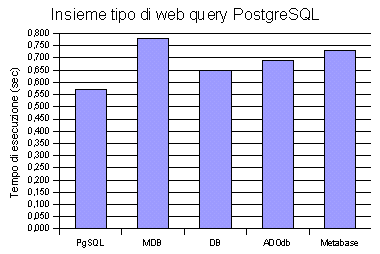

DataBase
Abstraction Layers
in PHP
Ingegneria Informatica
Corso di Sistemi Informativi-IIB
a.a. 2002/2003
Ilias Bartolini
mat. 2148063410
Per permettere una comprensione migliore degli aspetti legati si DataBase Abstration Layers in questo capitolo viene fatta un'introduzione sull'architettura del Web, sui meccanismi alla base delle applicazioni Web e dove si colloca il linguaggio PHP in questo contesto.
Il World Wide Web ha origine all'European Particle Physics Laboratory (CERN) di Ginevra, nel 1989 dall'idea di Tim Berners-Lee che riteneva necessario un sistema di comunicazione in forma ipertestuale che potesse integrare le risorse esistenti in internet.
A partire dal primo Congresso Web tenutosi a Ginevra nel 1994 è iniziata ad affermarsi l'esigenza di rendere il web dinamico. L'HTML di per se è statico, permette al massimo di inserire in una pagina un'immagine, una colonna sonora oppure uno spezzone video. L'HTML non è un linguaggio di programmazione ma solo di formattazione dei contenuti, permettendo di controllare come un testo comparirà nella finestra del browser.
Con lo svilupparsi di nuove tecnologie si è iniziato ad associare dinamicità ai contenuti web su due diversi fronti.
Sul lato client si sono creati standard per i documenti come DOM
(Document Object Model), linguaggi per la loro manipolazione come
Javascript e JScript, ed infine di definizione degli stili come il
CSS.
Questi strumenti si sono ridotti a semplici strumenti di
presentazione perché non è possibile controllare con
assoluta certezza il flusso di elaborazione che avviene sui client.
L'elaborazione delle pagine sul lato server è nata con gli
strumenti messi a disposizione dall'interfaccia CGI, che permetteva
di accedere a processi residenti sul server con lo scopo di creare le
pagine web.
Tra i linguaggi che hanno trovato applicazione in
questo campo ci sono Perl, ASP di Microsoft, le servlet JSP scritte
con linguaggio Java, ed altri tra cui anche PHP.
Lo scopo di
queste tecnologie è di creare le pagine web in base alle
azioni compiute dell'utente, ai dati residenti sul server o ad altre
risorse disponibili in rete creando vere e proprie applicazioni.
La struttura che si è andata diffondendo in questi ultimi tempi vede il processo di elaborazione delle pagine dividersi in 3 livelli distinti: il livello che sta alla base si occupa dell'archiviazione, mantenimento e recupero dei dati e si appoggia sempre più spesso a database relazionali SQL; al secondo livello sono delegate la logica e il controllo delle funzionalità applicative che costituiscono il core del sistema; l'ultima parte si occupa della presentazione e tende a mantenere separato l'aspetto grafico delle pagine dal livello sottostante.
Questa
struttura permette di separare il lavoro di sviluppo
dell'applicazione, pone la basi per la definizione di vincoli e
interfacce tra i diversi livelli che sono anche alla base di una
buona progettazione di un sistema software.
PHP è l'acronimo ricorsivo di PHP Hypertext Preprocessor,
attualmente è il linguaggio web più diffuso su internet
e permette di creare da semplici script fino ad interi portali
dinamici.
PHP è un linguaggio interpretato, nato da un
progetto della Apache Software Foundation, l'interprete che ne
costituisce il cuore è proprietà della Zend inc.
(www.zend.com) che ne distribuisce
i sorgenti liberamente.
Tutte le informazioni riguardanti PHP possono essere trovate
partendo dal sito ufficiale. (www.php.net
o meglio sul mirror italiano: it.php.net
)
Sul sito è presente il manuale in linea ufficiale del
linguaggio ogni pagina del quale è arricchita dai commenti dei
progettisti, programmatori ed utenti di PHP.
PHP è un linguaggio in forte evoluzione nel tempo grazie ai continui contributi della comunità Open Source, anche per questo motivo, il punto di riferimento è proprio il sito web ufficiale, esistono anche molte valide guide cartacee al linguaggio, ma che rischiano di diventare in fretta obsolete.
Le caratteristiche principali del linguaggio sono:
Leggerezza: punto di forza è proprio la velocità dell'interprete nella valutazione degli script, la Zend fornisce a pagamento un “pre-interprete” in grado di migliorare ulteriormente questa caratteristica.
Portabilità: utilizzando piccoli accorgimenti PHP è in grado di funzionare su diverse piattaforme (Windows32, Unix, Mac OS X, AS/400, ecc...) ed è in grado di appoggiarsi indifferentemente diversi web server (Apache, Microsoft IIS, Xitami, OpenHTTPd, ecc...) sfruttando l'interfaccia CGI.
Accesso a basso livello: permette di accedere a basso livello all'architettura web sottostante, come per esempio la possibilità di modificare manualmente gli header del protocollo HTTP, accesso ai comandi di sistema, funzioni per gestire socket, ecc...
Come conseguenza della filosofia Open Source, in PHP sono nate molteplici interfacce, librerie e moduli aggiuntivi (al momento attuale il manuale ufficiale comprende oltre 113 gruppi di librerie differenti) che permetto a PHP di lavorare con un'altissima gamma di applicativi e componenti esterni. Nel web sono altresì disponibili una miriade di applicativi e componenti aperti scritti in PHP per organizzare e creare modularmente sistemi web (oltre 180 packages nel progetto ufficiale pear.php.net, 1200 classi su phpclasses.org, 2100 progetti opensource su sourceforge.net, ecc..).
Gli aspetti “negativi” principali del linguaggio sono:
Scarso supporto all' Object Oriented Programming, sono previsti
solo i costrutti rudimentali che permettono l'ereditarieta, mentre
mancano ancora la protezione e incapsulamento degli oggetti.
Questi
ultimi aspetti sono previsti nelle future release del linguaggio (PHP
5 ora in versione beta).
Quasi completa assenza di strumenti di Debugging del codice, si è quindi costretti ad eseguire il debugging “in-linea”.
Come lo descrive Rasmus Lerdorf uno dei padri di PHP:
“PHP
is not a pure language. It never will be. The problem it solves is
ugly. Ugly problems often require ugly solutions. Solving an ugly
problem in a pure manner is bloody hard. PHP's aim is to make solving
the web problems easy.”
Per questo motivo in PHP per i programmatori alle prime armi è facile commettere errori ed è facile trovarsi smarriti nella miriade di interfacce e librerie che mette a disposizione.
PHP dispone del supporto per moltissimi sistemi o interfacce per DBMS: MySQL, PostgreSQL, MsSQL, Oracle, OracleOCI8, Firebird InterBase, IBM DB2, iODBC, Solid, Sybase, Sybase SQL Anywhere, Informix, FrontBase, Borland InterBase, FoxPro, Ingres II, Access, SqlLite, Adabas D, DB++, Hyperwave, dbx, Berkley dbm-DB, ODBC, ADO.
Anche se i primi 4-5 elencati coprono il 99% dei DB utilizzati nel web da PHP, le intefaccie verso questi sistemi messe a disposizione dalle librerie PHP sono state create in tempi diversi e sono molto differenti tra loro a causa dell'assenza di uno standard.
Come visto nel primo paragrafo sulla base dell'architettura delle
applicazioni a tre livelli è nata la necessità di
rendere indipendente il livello 1 (logico-applicativo) da quello
intermedio (persistenza dei dati).
Infatti nell'ambiente web
accade
spesso che ogni servizi di hosting si appoggino su server DBMS
diversi tra loro e le applicazioni web necessitano di poter
funzionare indipendentemente dal tipo di quest ultimo.
"Write
once - run anywhere" non è solo uno slogan Java, ma
questo principio si dovrebbe applicare a tutte le piattaforme aperte
PHP compreso.
Molti business model del settore informatico
richiedono l'indipendenza ripetto al sistema sottostante per
assicurare che il prodotto sia vendibile ad un ampia fetta di
acquirenti.
L'aspetto vincente di molti framework o pacchetti software per il web è stata proprio nella loro portabilità e capacità di separare i due livelli (logica applicativa e persistenza) e proprio in questo ambito si sono diffusi i DataBase Abstraction Layer (DBAL).
Il loro compito primario è quello di fornire un'intefaccia unificata per i sistemi sottostanti, appianare le differenze che intercorrono tra i vari DBMS e rendere quindi un'applicazione scritta con PHP maggiormente portabile.
Altro vantaggio che consegue all'utilizzo dei DBAL e quello di permettere ai programmatori di imparare un unico set di comandi utilizzabile su tutti i sistemi e velocizzare la parte di apprendimento e sviluppo delle applicazioni.
Gli svantaggi dei DBAL sono principalmente di due tipi.
Prima
di tutto un overhead nell'accesso ai Database con un conseguete calo
delle prestazioni che mediamente viene stimato in un 10-30% circa sul
tempo d'esecuzione complessivo di un'applicazione web.
Il secondo
inconveniente è che per fornire un'interfaccia “pulita”
non permettono di accedere alle caratteristiche peculiari di alcuni
sistemi che è necessario nascondere in favore della
portabilità.
Con il passare del tempo in PHP sono stati creati numerosi DBAL,
più o meno diffusi con il risultato che è andata
creandosi un po' di “entropia” tra gli
sviluppatori.
Scopo di questa tesina è studiare e
confrontare alcuni dei più famosi DBAL per PHP mettendone in
luce aspetti negativi e positivi ed analizzare quali siano le
problematiche ed i requisiti di un buon sistema di DBAL.
Fornire un'unica interfaccia software
Compito primario per un DBAL è definire un'interfaccia unica di accesso a tutte le funzionalità necessarie per lavorare con un database.
In PHP le interfacce delle diverse librerie non sono nemmeno
standardizzate tra loro, quindi per esempio ci possono essere
chiamate molto differenti tra loro.
Nell'esempio seguente sono
riportati i 3 modi diversi usati dalle librerie rispettivamente di
MySQL, PostgreSQL e Oracle per eseguire le due operazioni più
comuni, la connessione e l'esecuzione di una query
<?php
//connessione: PostgreSQL
$pg_db_link = pg_connect ("host=$host port=5432
dbname=$dbname user=$user password=$pass");
//connessione: MySQL
$my_db_link = mysql_connect($host, $user, $pass);
mysql_select_db($dbname,$db_link);
//connessione: Oracle OCI8
$ora_db_link = OCINLogon( $user, $pass, $dbname );
//esecuzione query: PostgreSQL
$dati = pg_exec($pg_db_link,$query)
//esecuzione query: MySQL
$result = mysql_query($query,$my_db_link);
//esecuzione query: Oracle OCI8
$statement = OCIParse($ora_db_link, $query);
OCIExecute($statement); ?>
Con questo semplice esempio si può
vedere come anche le operazioni più semplici sono eseguite da
funzioni con i nomi completamente diversi in cui i parametri e il
loro ordine cambia in tutti e tre i casi.
Per un programmatore che
abbia a che fare con diversi database diventa facile iniziare a
perdere più tempo sfogliando il manuale che per scrivere
codice.
Compito dei DBAL è nascondere queste differenze con
un'unica interfaccia che fornisca un wrapper per tutte le funzioni
specifiche.
Per questo motivo è importante studiare in
termini di facilità d'uso l'architettura del package del DBAL
e la sua interfaccia.
Rendere portabili le query SQL
La maggior parte dei database relazionali ormai rispettano lo
standard SLQ92 ed alcuni gin gran parte già rispettano le
specifiche lo standard SQL99.
Allo stato attuale in teoria le
query più semplici INSERT, UPDATE, DELETE, SELECT dovrebbero
essere in grando di essere eseguite agevolmente su tutti i sistemi...
ma naturalmente le insidie si nascondono dappertutto.
In realtà oltre le definizioni degli standard tutti i DBMS hanno definito funzionalità aggiuntive che li caratterizzano o li hanno caratterizzati per un certo periodo oppure hanno utilizzato piccole differenze di sintassi la dove lo standard non era ancora definito.
Per fare un esempio tipico si può citare il caso del
“limit” di una query.
Per esempio se si vogliono
prelevare da una tabella le ultime 10 notizie in ordine di data
(operazione comunissima in ambiente web) si possono avere le seguenti
diverse sintassi.
MYSQL:
SELECT * FROM NOTIZIE ORDER BY date DESC LIMIT 0,10 POSGRESQL:
SELECT * FROM NOTIZIE ORDER BY date DESC LIMIT 10 OFFSET 0
Problemi analoghi avvengono per la
rappresentazione delle date, dei valori booleani e il character
escaping delle stringhe.
Queste differenze delle sintassi diventano di particolare importanza anche per la sicurezza delle applicazioni e rischiano di generare problemi di SQLInjection.
Database Security e SQL Injection
La sicurezza dei Database parte dal design della loro
architettura.
Tutti i database relazionali forniscono strumenti
per gestire i privilegi sulle loro tabelle e per creare delle viste.
Uno dei tipici errori che si commettono è far accedere gli
applicativi ai database con diritti di super user. Ciò
permette ad eventuali intrusi che riescano a prendere il controllo
della connessione di poter leggere o eliminare l'intero contenuto del
database.
Apparte il consiglio di non utilizzare un utente con
privilegi superiori a quelli necessari è bene conoscere come
gli attaccanti possono utilizzare un'applicazione web per eseguire
del codice SLQ arbitrario e come i DBAL possono proteggerci da questo
problema.
Un esempio di SQL injection è mostrato nell'articolo Secure PHP Programming di Tomas Oertli (www.zend.com/zend/art/art-oertli.php) ed è descritto brevemente qui di seguito
Il seguente problema è stato riscontrato bug in PHP-Nuke 5.x e consiste in una combinazione di sovrapposizione di variabili globali e una variabile costituente una query SQL non controllata.
Tralasciano i dettagli dell'articolo, si può vedere in uno script dell'applicazione il seguente codice:
<?php
mysql_query("UPDATE $prefix"._stories.
" SET counter=counter+1 where sid=$sid");
?>
Per scriver una query arbitraria è
sufficiente far in modo che $prefix
non venga impostata al suo valore di default ed impostargli un valore
arbitrario.
Per esempio con una semplice richiesta tramite il seguente URI:
http://example/article.php?mainfile=1&sid=1&tid=1&prefix=nuke.authors%20set%20pwd=1%23
vengono impostate tutte le password degli amministratori al valore '1' producendo la seguente query:
MYSQL:
UPDATE nuke.nuke_authors set pwd=1#_stories
SET counter=counter+1 where sid=1
Naturalmente tutto ciò che segue il
carattere # viene considerato un commento da MySQL e quindi ignorato.
Una prima protezione si ottiene mantenendo la direttiva
gpc_magic_quotes=on
nel file php.ini
Quando questa direttiva è attivata, in
tutte le variabili che provengono dall'input (GET, POST, COOKIE) PHP
aggiunge automaticamente a del caratteri \ (backslash) di fronte ai
caratteri ' (quote) '' (double-quote) e \ (backsalsh) in modo
permettere che siano inseriti senza problemi come valori di una query
SQL.
Purtroppo l'escaping dei caratteri speciali non è uguale per tutti i database quandi anche in questo caso è compito di tutte le librerie DBAL fornire questa funzionalità nascondo i dettagli con cui è implementata.
Gestione delle transazioni
Altra funzionalità dei DBMS
molto utilizzata sono le transazioni.
Se si da un'occhiata alla
lista di tutti i DBMS per cui esiste un'interfaccia in PHP si può
vedere che alcuni di essi anche molto diffusi nelle loro prime
versiono non gestivano le transazioni come ad esempio MySQL e
SQLLite.
Alcune delle librerie DBAL più evolute riescono ad
implementare in maniera rudimentale il meccanismo delle transazioni
bloccando le query che accedono a tabelle che sono già in
uso.
Quando il DBMS invece ha al suo interno un più
efficace meccanismo per le transazioni si appogiano a questo.
Error Logging ed Handling
PHP dispone di alcune direttive e funzioni che permettono di impostare il livello di reporting degli errori (notice, warning, fatal error o parse error), di personalizzarne il formato e scegliere differenti handler.
In fase di implementazione del codice è sempre buona norma tenere di default gli errori visualizzati sul browser ed impostare all'inizio di ogni script error_reporting(E_ALL), in questo modo è possibile notare fin da subito anche piccoli warning e porvi rimedio.
In fase di produzione è meglio non visualizzare questi errori sul browser in quanto spesso possono contenere informazioni sulla struttura delle directory o posizione degli script.
Tutte le funzioni di accesso al database hanno la possibilità
di generare un errore.
Purtroppo in PHP non esiste ancora il
meccanismo delle eccezioni (sarà disponibile da PHP5) quindi
risulta di particolare importanza il meccanismo con cui i DBAL
restituiscono le situazioni di errore che necessita di semplicità
ed estrema flessibilità per poter essere adattato a tutti i
stili di applicazione e alla situazione in cui ci si trova.
Sia attraverso la configurazione di php.ini che attraverso le
funzioni di Error Handling e Logging
(www.php.net/manual/en/ref.errorfunc.php)
è possibile definire delle diverse risorsa di output degli
errori, definire nuovi tipi di errore o creare i propri handler per
la gestione di ogni tipo di errore con i quali è possibile per
esempio inviare dei messaggi personalizzati, salvare gli errori su un
file di log, inviare delle notifiche in e-mail, ecc...
Alcune
librerie forniscono completa integrazione con questi meccanismi, in
particolare si vedrà in seguito che è ormai diventato
uno standard l'uso della classe PEAR::Error che permette di ottenere
delle informazioni complete sullo stato dell'applicazione in fase di
debbugging.
Rendere portabili le descrizioni delle tabelle e dei tipi di dato
L'ultima grossa problematica che resta da affrontare per redere un'applicazione davvero portabile è nella definizione almeno delle tabelle del suo database.
Se con il rispetto degli standard
SQL92 e SQL99 si è riusciti ad uniformare la sintassi delle
query principali, purtroppo esistono ancora enormi differenze sui
tipi di dati messi a disposizione dai DBMS e da modo in cui vengono
definite le loro tabelle.
Basti pensare ai diversi modi di
descrive indici chiavi, alcuni database supportano i controlli sulle
foreign key, altri non implementano nemmeno le sequenze.
In mezzo a tutta questa confusione il creatore di un sistema di DBAL ha tentato di fare ordine e creare una definizione XSD per dare la descrizione dello schema relazionale di un database tramite XML.
Come si vedrà in seguito, questo sistema è ancora agli albori e presenta ancora molte “inefficienze”... purtroppo a quanto risulta da alcune ricerce effettuate tra i grossi costruttori di DBMS o organismi di standardizzazione ancora nessuno ha tentato di affrontare questa tematica.
Tentare di creare uno standard dal basso?
Come si è potuto vedere molte delle problematiche nascono dalla assenza di una standardizzazione.
Dando un'occhiata al mondo Java si può osservare che la Sun
è riuscita ad imporre un suo standard , le JDBC a cui poi
tutti i prduttori di DBMS si sono adattati fornendo i loro
drivers.
Il problema fondamentale di PHP è che non esiste
nessuno con il potere economico-politico della Sun per imporre uno
standard.
I DBAL nascono semplici gruppi di appassionati
programmatori, quindi in questo caso sono loro a dover creare delle
librerie che nascondano le differenze e non i produttori a doversi
adattare alle loro esigenze.
Dalle ricerche in rete, dalla lettura di alcuni articoli e dai confronti su gruppi di discussione sono emersi quattro principali “candidati” DBAL per PHP che verranno analizzati e confrontati nelle prossime pagine:
PEAR::DB – Attualemente il più diffuso sistema DBAL, fa parte delle librerie ufficiali PEAR (Php Extensions and Application Repository) che viene inclusa in alcune distribuzioni di PHP.
ADOdb – Ispirato alle interfacce di Microsoft ADO è attualmente il principale concorrente di PEAR::DB in termini di diffusione.
Metabase – Sistema creato dal programmatore Manuel Lemos autore di altri famosi packages PHP molto usati, si distinge per la ricchezza di features, ottima documentazione e un sistema per la rappresentazione degli schemi relazionali tramite XML.
PEAR::MDB – Nuovo sistema nato da pochi mesi dall'unione dei team si sviluppo di PEAR::DB e Metabase con lo scopo di unire i vantaggi dei due sistemi.
I criteri di valutazione dei sistemi si baseranno principalmente sui seguenti fattori:
– performance,
– grado di portabilità,
–
features supportate,
– architettura ed interfacce del
package,
– semplicità d'uso,
– bontà
della documentazione.
PEAR::DB è allo stato attuale la libreria di Database
Abstraction più diffusa nei progetti PHP, può essere
installata facilmente su tutti i sistemi utilizzando l'apposta
utility PEAR che anche se molto semplice da utilizzare può
risultare invadente sul sistema su cui è installata.
Alternativamente il codice sorgente può essere scaricanto
da http://pear.php.net/package-info.php?pacid=46
.
PEAR::DB è stata la prima libreria a fornire
un'interfaccia completamete OO per l'accesso ai database.
Dal
punto di vista architetturale l'albero delle classi è quello
che poi verrà presa d'esempio da tutti i successivi sistemi.
DB DB_common
+-- DB_mssql
+-- DB_mysql
+...
+-- DB_oci8
+-- DB_odbc
+-- DB_pgsql DB_result DB_row DB_storage PEAR_Error
+-- DB_Error
L'accesso avviene tramite la classe DB che
fornisce i metodi per la configurazione e creazione di un oggetto con
intefaccia DB_common, a seconda del tipo di database utilizzato al
livello sottostante verrà utilizato il driver specifico.
I
risultati delle query sono di tipo DB_result e DB_row che dispongono
dei metodi necessati alla loro manipolazione.
Come in tutte le
classi PEAR la gestione degli errori avviene tramite PEAR_Error.
<?php
//connessione: $db_type è il tipo di driver da utilizzare
$db_link = DB::connect(
"$db_type://$user:$passwd@$host/$db_name" );
if ( DB::isError($db_link) ) echo $db_link->getMessage();
//esempio setting impostazioni
$db_link->setFetchMode(DB_FETCHMODE_ASSOC);
//esecuzione di una query
$sql = 'SELECT * FROM utente WHERE livello=100;
$result = $db_link->query($sql);
if ( DB::isError($result) ) echo $result->getMessage();
//manipolazione del risultato
while ( $row = $result->fetchrow() ) {
echo $row['id_utente'];
echo $row['username'];
}
//liberazione delle risorse
$result->free();
$db_link->disconnect(); ?>
Vediamo un breve esempio delle operazioni del
ciclo base “connessione – esecuzione della query –
manipolazione del risultato – liberazione delle risorse”
In particolare si noti il sistema per eseguire la connessione
basato sul Data Source Name (DSN) che ormai è
diventato uno standard per la descrizione delle risorse dati ed è
stato esteso anche ai sistemi di directory.
Il DSN è
costituito da una stringa con sintassi del tipo
"$db_type://$user:$passwd@$host/$db_name"
che ricorda gli URI web.
Dato il solo DSN in ingresso PEAR::DB è
capace di connettersi alla risorsa dati desiderata qualsiasi sia il
suo tipo o il particolare protocollo utilizzato per accedervi.
PEAR::DB è in grado di gestire transazioni
che vengono supportate in modo 'rudimentale' anche su database che
non le implementano attraverso appositi metodi che forniscono accesso
alle funzionalità in modo portabile.
Implementa l'utilizzo
di sequenze anche su database che non le supportano in modo
nativo.
Infine dispone di interfacce per l'accesso diretto agli
oggetti del database di tipo BLOB e CLOB.
Riguardo alla portabilità delle query SQL sono messi a disposizione dei metodi per eseguire il limit di una query per recuperarne i primi n risultati e per eseguire l'escaping dei caratteri speciali nelle costanti testuali la cui sistassi SQL differisce leggermente a seconda del database utilizzato.
Il pregio maggiore di PEAR::DB è un'interfaccia molto
semplice e pulita, dopo aver visto un esempio si può
immediatamente operativi e la manualistica è molto
semplice.
La documentazione allegata al package è
praticamente nulla, ma attraverso PHPDocumentor si può
generare una ottima API reference a partire dai commenti nel codice
(si può vedere ad esempio:
http://www.brainetwork.net/my_docs/DB_docs
)
In rete è possibile trovare un'enorme quantità di
tutorial ed articoli che descrivono l'utilizzo di questo package.
I DBMS attualmente supportati sono: dBase, Firebird Interbase, Borland Interbase, Informix, MsAcces, MsSQL, PostgeSQL, SqlLite, MySQL, Oracle OCI8, IBM DB2, ODBC, Sybase.
Il pacchetto PEAR::DB è rilasciato secondo la PHP Licence
ADOdb è una libreria per PHP ispirata a Microsoft ADO creata da una comunità molto attiva di sviluppatori. Tutte le informazioni riguardanti ADOdb, i pacchetti del codice sorgente e la documentazione possono essere trovate a partire dal sito http://php.weblogs.com/ADODB
Le interfacce sono molto simili a MicrosoftADO e quindi risulta molto semplice l'appredimento per chi conosce già questa libreria.
L'architettura interna non è completamente Objet Oriented ma resta molto simile a quella di PEAR::DB con una classe ADOConnection per rappresentare la connessione al database che viene ereditata dai drivers specifici delle piattaforme sottostanti e un oggetto ADORecordSet per accedere ai risultati delle query.
Vediamone un piccolo esempio delle operazioni di base:
<?php
//connessione: $db_type è il tipo di driver da utilizzare
$db_link = ADONewConnection( $db_type );
$db_link->Connect($host, $user, $pass, $db_name);
if ( !db_link ) echo $db_link->ErrorMsg();
//esempio setting impostazioni
$db_link->SetFetchMode(ADODB_FETCH_ASSOC);
//esecuzione di una query
$sql = 'SELECT * FROM utente WHERE livello=100';
$result = $db_link->Execute($sql);
if ( !$result ) echo $result->ErrorMsg();
//manipolazione del risultato
while ( !$result->EOF ) {
echo $result->fields['id_utente'];
echo $result->fields['username'];
$result->MoveNext();
}
//liberazione delle risorse
$result->Close();
$db_link->Close(); ?>
La gestione degli errori è fatta tramite
l'ADOdb Error Handler che dispone opzionalmente di un
wrapper che lo rende identico a PEAR::Error.
In maniera analoga è
possibile utilizzare un'interfaccia alternativa per eseguire la
connessione nello stile PEAR::DB tramite il DSN
Di particolare interesse è il sistema per gestire le
transazioni che dispone di una doppia interfaccia.
La prima
permette di eseguire su tutti i sistemi transazioni in modo
tradizionale.
La seconda Smart Transaction utilizza
internamente l'ADOdb Error Handler e permette di non doversi
preoccupare del check degli errori. Ad ogni esecuzione di una query
SQL, senza bisogno di inserire espliciti comandi di controllo, viene
verificato se sono avvenuti errori ed in caso affermativo eseguito
automaticamente il rollback della transazione.
<?php
//metodo tradizionale
$db_link->BeginTrans();
$ok = $db_link->Execute($sql_query_1);
if ( !$ok ) { $db_link->RollbackTrans(); return; }
$ok = $db_link->Execute($sql_query_2);
if ( !$ok ) { $db_link->RollbackTrans(); return; }
$db_link->CommitTrans(); ?>
<?php
//metodo Smart Transaction
$db_link->StartTrans();
$db_link->Execute($sql_query_1);
$db_link->Execute($sql_query_2);
$db_link->CompleteTrans(); ?>
Nell'accesso ai risultati delle query ADOdb
permette di ottenere informazioni relative ai tipi di dato
descrivendoli mediante dei MetaTipi.
C: Character fields (eg: that should be shown in a <input type="text"> tag )
X: TeXt, large text fields (eg: that should be shown in a <textarea>)
B: Blobs, or Binary Large Objects. (Typically images or generic files.)
D: Date field
T: Timestamp field
L: Logical field (boolean or bit-field)
I: Integer field
N: Numeric field. Includes autoincrement, numeric, floating point, real and integer.
R: Serial field. Includes serial, autoincrement integers.
Tra le features aggiuntive supportate c'è la disponibilità di diversi filtri per l'esportazione dei dati nei formati CSV, XML o tabelle Html e un driver per PHP che permette di salvare le sessioni utente su database invece che su filesystem.
La documentazione allegata al pacchetto è di buona qualità:
ottimo il tutorial introduttivo, un po' peggiore la descrizione delle
API
Sul sito internet ufficiale può essere trovata anche il
documento molto interessante “Guide to write portable SQL”
che descrive e spiega alcuni esempi SQL per migliorare la portabilità
delle proprie applicazioni usando ADOdb.
I DBMS attualmente supportati sono: FrontBase SQL, Firebird Interbase, Borland Interbase, Informix, MsAcces, MsSQL, PostgeSQL, MySQL, Oracle OCI8, IBM DB2, ODBC, Sybase.
Il pacchetto ADOdb è rilasciato con doppia licenza BSD e LGPL.
Metabase è un package molto maturo nato oltre 5 anni fa già
su PHP3 dal lavoro di Manuel Lemos già autore di altri famosi
package per PHP.
Metabase costituisce il primo tentativo di
astrarre in modo completo il comportamento del database dalla
struttura dell'applicazione.
Con i DBAL visti finora è
possibile eseguire le query più comuni come SELECT, INSERT;
UPDATE con la garanzia che apparte piccoli dettagli le sintassi di
queste query siano portabili su quasi tutti i sistemi.
Nei casi in
cui questo non è possibile come il “limit” o le
“transazioni” intervengono delle funzioni particolari
delle librerie.
Nessuno dei DBAL precedenti però garantisce la portabilità completa delle strutture delle tabelle dei database, le query del tipo CREATE TABLE, ALTER TABLE hanno sintassi troppo differenti a seconda del sistema con cui si lavora ed inoltre bisogna considerare le grosse differenze tra i set dei “tipi di dato” che gestiscono i vari database.
Metabase è stato il primo package ad affrontare questo
problema fornendo un sistema per descrivere gli schemi dei database
tramite XML.
Il manuale di Metabase si apre proprio con un
tutorial “Designing a database” su come utilizzare questo
metodo per decrivere le tabelle, indici, sequenze e quant altro
necessario alla creazione di un database.
Purtroppo i tipi di dato per essere rispettati da tutte le
architetture sono molto generici nella loro descrizione: Text,
Boolean, Integer, Decimal, Float, Date, Time, Time stamp, Large
object.
In particolare nelle prove effettuate è stato
verificato che anche se vengono specificati dei limiti di lunghezza
nei campi testuali i drivers sia per PostgreSQL che MySQL non li
implementano utilizzando il tipo varchar() ma dei generici campi di
testo.
Metabase garantisce completa portabilità delle query
fornendo una grossa quantità di metodi per eseguire le
conversioni per ogni tipo di dato all'interno delle query ed eseguire
l'esacaping corretto dei caratteri delle costanti.
Viene riportato qui sotto un piccolo esempio molto intuitivo della descrizione di una tabella:
<?xml
version="1.0" encoding="ISO-8859-1"?> <database>
<name>test</name>
<create>1</create>
<table>
<name>users</name>
<declaration>
<field>
<name>user_id</name> <type>integer</type>
<default>0</default> <notnull>1</notnull>
</field>
<field> <name>user_name</name>
<type>text</type> </field>
<field> <name>passwd</name> <type>text</type>
</field>
<index>
<name>users_id_index</name>
<unique>1</unique>
<field> <name>user_id</name> </field>
</index>
</declaration>
</table>
<sequence>
<name>user_id</name>
<start>1</start>
<on> <table>users</table>
<field>user_id</field> </on>
</sequence> </database>
L'architettura di Metabase oltre alle parti già
viste negli altri DBAL dispone di uno “Schema Parser” che
non è altro che la specializzazione di un Paser XML.
Lo
Schema Parser genera una struttura dati che viene interpretata dal
Database Manager che a sua volta si appoggia su driver specifici a
seconda del DBMS utilizzato per creare il database vero e proprio.
Il Database Manager oltre a creare la struttura è in grado
di apportare modifiche ad un database presistente confrontando due
successivi file XML della loro descrizione.
Infine è in
grado di eseguire il reverse engineering di un database nel formato
XML, anche se a dir la verità facendo un prova su PostgreSQL i
risultati sono stati molto scarsi se il database di partenza non è
stato creato precedentemente con lo stesso Metabase.
Uno dei problemi emersi dalle discussioni in rete su Metabase è la sua eccessiva pesantezza. Trattandosi di un package nato per compatibilità anche verso PHP3 disponde di una doppia intrefaccia per l'accesso ad ogniuna delle sue features una Object Oriented ed una sotto forma di libreria di funzioni.
Vediamone un piccolo esempio delle operazioni di base:
<?php
//connessione: $db_type è il tipo di driver da utilizzare
$db_init_array = array('Type' => $dbtype,
'User' => $user,
'Password' => $pass,
'Host' => $host,
'IncludePath' =>
'/lib/directory/metabase/');
$error = MetabaseSetupDatabaseObject($db_init_array,&$db_link);
if ($error!='') echo $error;
$db_link->SetDatabase($dbname);
//esecuzione di una query
$sql = 'SELECT id_utente, username FROM utente WHERE livello=100';
$result = $db_link->Query($sql);
if (!$result) echo 'Messaggio d\'errore';
//manipolazione del risultato
$num_rows = $db_link->NumberOfRows($result);
for ( $i=0 ; $i<$num_rows ; $i++ ) {
$db_link->FetchResultArray($result, $row, $i);
echo $row[0];
echo $row[1];
}
//liberazione delle risorse
$db_link->FreeResult($result);
$db_link->CloseSetup(); ?>
Metabase nato prima di PEAR::DB non permettere
di eseguire la connessione attraverso il sistema DNS ma come si può
vedere nell'esempio è necessario creare una struttura dati
contenente tutte le informazioni sulla connessione da eseguire.
Un'altra pecca di questo sistema è l'impossibilità di restituire una tupla del risultato su un array associativo contenete la descrizione dei campi come chiavi, pratica molto in uso tra i programmatori. L'accesso può avvenire solo ricordando l'ordine con cui sono selezionati i campi nella query.
Le transazioni sono gestite in maniera simile a PEAR::DB.
La documentazione è allegata al paccheto dei sorgenti è molto ricca ed esauriente ma non brilla in chiarezza ne per la sua organizzazione un po' confusionale.
I database supportati sono attualmente: Firebird Interbase, Borland Interbase, Informix, MsAcces, MsSQL, PostgeSQL, MySQL, Oracle OCI8, IBM DB2, ODBC, Mini-SQL, SqlLite.
Metabase è rilasciato con licenza BSD
PEAR::MDB è un progetto molto giovane nato dall'unione di PEAR::DB e Metabase a quanto pare avvenuta in seguito ad un incontro alla PHPConference 2001fall tra gli autori dei due pacchetti.
Si voleva creare un DBAL con lo stesso grado di astrazione di Metabase ma che avesse un'iterfaccia completamente OO, un'API più semplice, e che avesse performance più accettabili rispetto a quelle di Metabase.
MDB fa proprio questo: combina il meglio di PEAR::DB e di Metabase, molto lavoro è stato svolto nell'unificare le interfacce dei due sistemi mantenendole il più semplice ed intuitiva possibile senza avere problemi di performance... e, a detta degli autori, le prestazioni sono molto migliori rispetto a Metabase.
Per metterlo alla prova è necessario installare il package con il solito installer PEAR
L'architettura del package ora è leggermente cambiata, non
esiste più un oggetto 'risultato'.
Questa scelta è
stata fatta per recuperare un po' di performance ed alleggerire la
manipolazione dei risultati.
Vediamone un piccolo esempio delle operazioni di base:
<?php
//connessione: $db_type è il tipo di driver da utilizzare
$db_link = MDB::connect(
"$dbtype://$user:$pass@$host/$dbname" );
if ( MDB::isError($db_link) ) echo $db_link->getMessage();
//esempio setting impostazioni
$db_link->setFetchMode(MDB_FETCHMODE_ASSOC);
//esecuzione di una query
$sql = 'SELECT id_utente, username FROM utente WHERE livello=100';
$result = $db_link->query($sql);
if ( MDB::isError($result) ) echo $result->getMessage();
//manipolazione del risultato
while ( $row = $db_link->fetchInto($result) ) {
echo $row['id_utente']
}
//liberazione delle risorse
$db_link->freeResult($result);
$db_link->disconnect(); ?>
echo $row['username']
Come si può vedere dall'esempio molte
interfacce sono molto simili a quelle di PEAR::DB.
Da PEAR::DB vengono inoltre ereditate molte altre
caratteristiche:
Identico è il metodo per eseguire la
connessione basato sul Data
Source Name.
La gestione degli errori si
appoggia sempre su PEAR::Error come ormai standard in tutte le
librerie appartenenti a PEAR.
La gestione delle transazioni è
identica a quella di PEAR::DB, così come il e
Da Metabase invece sono presi il sistema di Database Manager
basato su XML e la completa astrazione sui tipi di dato. I formati di
descrizione sono identici in modo da pemettere anche una semplice
transizione per chi utilizza Metabase.
Sempre identico a Metabase
è il sistema delle Prepared Queries che permette di
velocizzare l'esecuzione di più query con struttura sintattica
simile tra loro.
Le differenze sono solo al livello sottostante,
il parser XML utilizzato e il PEAR::XML_Parser ma è in
previsione l'utilizzo del Parser che sarà integrato in PHP5
con un notevole incremento delle prestazioni del Database Manager.
Per chi volesse affrontare una lenta transizione a partire da Metabase o da PEAR::DB verso PEAR::MDB sono state create delle classi wrapper che espongono all'esterno interfacce indentiche a quelle dei due sistemi precedentemente indicati.
La documentazione come nel caso di PEAR::DB può essere
generata utilizzando PHPDocumentor, anche se in questo caso il
risultato è leggermente peggiore.
La documentazione
riguardante il Database Manager è stata ricopiata
completamente da Metabase, ma contiene in questo caso delle
inesattezze perchè rimasta aggiornata alla vecchia
interfaccia.
L'unico difetto di MDB è la sua gioventù.
I driver che vengono indicati come disponibili nella documentazione sono: MySQL, PostgreSQL, Oracle OCI8, Frontbase, Querysim, Interbase, Firebird, MsSQL ma in realtà solo i primi due sono stati sviluppati completamente e testati in modo adeguato.
Nonostante questo durante l'utilizzo nelle prove stati riscontrati un paio di piccoli bug nel driver per PostgreSQL, che anche se semplicemente risolvibili hanno creato grosse perdite di tempo.
PEAR::MDB è rilasciato con licenza BSD.
Nelle prova si voleva innzitutto tenstare i DBAL su diverse
piattaforme per provare la loro l'effettiva possibilità di
lavorare in ambienti diversi, quindi si è deciso di eseguire
tutte le prove con i due RDBMS per PHP più diffusi: PostgreSQL
e MySQL.
Purtroppo si è dovuto utilizzare PostgreSQL in
ambiente Windows anche se il suo ambiente nativo sono i sistemi
Unix.
Si aveva intenzione di lavorare in remoto su una macchina
server Linux ma in seguito ad un crash di quest ultima è stato
impossibile andare a riavviarla, quindi per i test è stato
utilizzato un desktop pentium3 (1000mhz, 384MB RAM) con sistema
operativo Windows2000.
A causa di questo inconveniente non
risultano tra loro confrontabili in valore assoluto le prestazioni
ottenure sui due diversi RDBMS, ma è stato comunque possibile
ottenere dati significativi per confrontare tra loro i DBAL e
rendersi conto delle effettive capacità di lavorare su
differenti sistemi.
Per le prove si è lavorato con un database creato tramite
il formato XML del Database Manager di MDB/Metabase tipico di un
ambiente web, in particolare ci si è ispirati ad alcune
tabelle del del database progetto UniversiBO in modo da poter
importare anche alcuni dati significativi per tipo e quantità.
Lo schema completo privo dei contenuti è riportato in
appendice.
Per ogni test sono stati eseguiti una serie di
operazioni di acecsso al database, per confronto lo stesso script di
test è stato scritto usando direttamente le librerie
rispettivamente di PosgreSQL e MySQL. Il codice del test scritto
utilizzando i DBAL naturalmente è stato utilizzato su entrambe
le piattaforme senza neccessità di compiere modifiche
Ogni test è stato eseguito 20 volte e viene riportato in queste pagine solo il valore medio dei risultati ottenuti.
Il primo test eseguito consiste nel valutare l'overhead di una
semplice connessione al database.
PHP è un linguaggio
interpretato, l'efficienza di un'applicazione è data anche
dalla snellezza del suo codice.
Il tempo necessario ad eseguire una richiesta web dovrebbe essere nell'ordine di pochi decimi di secondo. Includere un DBAL nella propria applicazione significa ad ogni richiesta web dover fare il parsing dell'intero codice della libreria.
Questo primo test ha l'obbiettivo di dare una stima in valore assoulto dell'overhead di questa inclusione del codice per poterla confrontare almeno come ordine di grandezza con il tempo di una richiesta web.
Per l'inconveniente descritto all'inizio di questo paragrafo purtroppo non sono significativi in questo senso valori registrati con PostgreSQL, ma possono essere confrontati tra loro i diversi DBAL.
Il secondo test consiste nel mettere in massimo risalto la differenza della “pura” velocità di esecuzione delle librerie.
Questo si è ottenuto eseguendo query molto semplici (dump
di intere tabelle e query su indici senza eseguire join) in questo
modo si è fatto largo uso delle operazioni delle librerie per
la gestione dei risulatati (operazioni di fetch).
Si sono eseguite
queste operazioni molteplici volte in modo da rendere minimo in
proporzione l'overhead dovuto al parsing della libreria che abbiamo
misurato con il test precedente.
Proprio riguardo all'operazione di fetch, siccome Metabase non supporta il fetch associativo (data una tupla restituisce un array associativo contenente i nomi delle colonne come indici dell'array) che però è largamente usato dai programmatori PHP si sono eseguite due batterie di test sia con fetch associativo che non associativo.
Questo test racchiude un insieme di richieste al database con un insieme di query tipiche di un applicazione web.
L'insieme delle operazioni oltre alla
connessione al database comprendeva 2 query su indice (verifica
dell'utente e dell'argomento richiesto) una query con join su 3
tabelle ordinamento e limit (prelievo delle ultime 10 notizie di un
argomento) tutto compreso della gestione dei relativi risultati.
Le
query sono state eseguite più volte con parametri differenti
per simulare l'accesso a diversi servizi da parte di utenti diversi.
Naturalmente per l'attendibilità dei risultati il database è stato popolato con i dati raccolti in oltre un anno di servizio del server del progetto UniversiBO.

Ricordando che a causa degli inconvenienti accaduti in fase di test i risultati ottenuti con PostgreSQL non sono attendibili in valore assoluto e che le prestazioni non sono certamente quelle che si possono ottenere con una macchina server dell'ultima generazione con il quale si sperano di riuscire a gestire fino a qualche decina di richieste al secondo.
Il test che permette di dare una stima di confronto tra le prestazioni complessive dei vari DBAL è naturalmente l'utimo.
Nel complesso i DBAL più
performati sono stati PEAR::DB e ADOdb mentre MDB è stato
largamente il peggiore in tutti i test.
Non male si è
comportato Metabase che in base alle informazioni disponibili in rete
avrebbe dovuto ottenere prestazioni peggiori di tutti gli altri
sistemi.
Infine si dovrebbe tener conto che
tutti i test sono stati fatti per tutti su un database genereato da
Metabase e MDB tramite XML.
Nell'ambito del processo di sviluppo
di un'applicazione reale con PEAR::DB e ADOdb ci si troverebbe a
dover implementare tabelle, indici e scelta dei tipi di dato su ogni
singola piattaforma con possibile magine di incremento delle
prestazioni per questi due sistemi.
|
DBAL |
Architettura |
Documentazione |
Portabilità |
Semplicità d'uso |
Performance |
|---|---|---|---|---|---|
|
DB |
Ottima |
Buona |
Buona |
Buona |
Buone |
|
ADOdb |
Buona |
Buona/Ottima |
Buona |
Buona/Ottima |
Buone |
|
MDB |
Ottima |
Discreta |
Discreta |
Buona |
Scarse |
|
Metabase |
Scarsa |
Discreta |
Ottima |
Discreta |
Discrete |
Questo lavoro è stato iniziato con l'idea di scegliere un DBAL per lo sviluppo di un'applicazione web Open Source all'interno dell'università di Bologna.
Particolare attenzione al confronto prestazionale è dovuto alle risorse hardware attualmente molto limitate dedicate al progetto per cui risulta di vitale importanza poter gestire la scalabilità dell'applicazione sulla macchina ora a disposizione.
L'intenzione di utilizzare un DBAL è dovuta al fatto che il
progetto risulta appetibile da altre facoltà diverse da
quella in cui si è sviluppato, quindi si intende renderlo più
portabile possibile.
Inoltre accedendo il sistema a molti altri
database di tipi diversi all'interno della rete di ateneo (Oracle,
MsSQL e MySQL) si ritiene utile la possibilità di usare una
sola interfaccia per accedere a tutti quanti.
Ora il progetto è sviluppato direttamente sulle librerie PostgreSQL, ma si sente la necessità di darne almeno un'implementazione in MySQL in quanto purtroppo largamente utilizzato nell'ambiente PHP e in altre facoltà interessate al progetto.
Altra motivazione percui si vuole utilizzare anche MySQL è per rendere più semplice l'ingresso di nuovi ragazzi interessati allo sviluppo dell'applicazione che risulta di vitale importanza perchè il progetto possa continuare ad essere Open Source e gestito da studenti. Sembra una banalità ma molti si sono arresi al momento in cui si sono trovati a tentare ad utilizzare PostgreSQL sui loro sistemi Windows!!
Tra i DBAL analizzati nonostante il fascino della possibilità
offerta da MDB e Metabase di descrivere il database l'applicazione in
formato XML si è deciso di scartarli.
Non si ritiene
neccessaria questa feature in quanto al momento sono solo 2 i sistemi
target e si preferisce dare una doppia implementazione del codice SQL
che descrive le tabelle potendo inserire tutte le ottimizzazioni del
caso.
Inoltre il progetto MDB è molto promettente ma si è
rivelato il peggiore in tutti i test prestazionali e soprattutto non
dispone attualmente della sufficiente maturità.
Metabase
offre un'architettura ormai obsoleta, non permette di eseguire alcune
operazioni molto utili come il fetch associativo dei risultati.
Tra PEAR::DB e ADOdb considerando le
prestazioni simili tra loro (PEAR::DB risulta inferirore solo nel
secondo test) a favore di ADOdb resta il sistema di Smart
Transaction, alcune features di interesse marginale per esportare i
dati e la doppia licenza che libera da qualsiasi tipo di vincolo.
A
favore di PEAR::DB ci sono un'interfaccia full-OO e magari la
possibilità di una semplice transizione a PEAR::MDB essendo le
due interfacce molto simili.
<?xml version="1.0" encoding="ISO-8859-1" ?>
<database>
<name>test_dbal</name>
<create>0</create>
<table>
<name>utente</name>
<declaration>
<field>
<name>id_utente</name> <type>integer</type>
<default>0</default> <notnull>1</notnull>
</field>
<field>
<name>username</name> <type>text</type>
<lenght>32</lenght>
</field>
<field> <name>passwd</name> <type>text</type> <lenght>32</lenght> </field>
<field> <name>livello</name> <type>integer</type> </field>
<field> <name>email</name> <type>text</type> <lenght>255</lenght> </field>
<field> <name>ultimo_login</name> <type>integer</type> </field>
<field>
<name>inoltro_email</name> <type>text</type>
<lenght>1</lenght>
</field>
<field> <name>ad_username</name> <type>text</type>
<lenght>255</lenght>
</field>
<index>
<name>utente_id_utente</name>
<unique>1</unique>
<field> <name>id_utente</name> </field>
</index>
</declaration>
</table>
<sequence>
<name>id_utente</name>
<start>511</start>
<on> <table>utente</table> <field>id_utente</field> </on>
</sequence>
<table>
<name>argomento</name>
<declaration>
<field>
<name>id_argomento</name> <type>integer</type>
<default>0</default> <notnull>1</notnull>
</field>
<field>
<name>tipo_argomento</name> <type>text</type>
<lenght>1</lenght>
</field>
<field> <name>visite</name> <type>integer</type> </field>
<field>
<name>immagine</name> <type>text</type>
<lenght>64</lenght>
</field>
<field> <name>files_attivo</name> <type>boolean</type> </field>
<field> <name>news_attivo</name> <type>boolean</type> </field>
<field> <name>forum_attivo</name> <type>boolean</type> </field>
<field> <name>diritti_visualizzazione</name> <type>integer</type> </field>
<field>
<name>nome_argomento</name> <type>text</type>
<lenght>64</lenght>
</field>
<field> <name>ultima_modifica</name> <type>integer</type> </field>
<field> <name>id_forum_phpbb</name> <type>integer</type> </field>
<field> <name>id_group_phpbb</name> <type>integer</type> </field>
<index>
<name>argomento_id_argomento</name>
<unique>1</unique>
<field> <name>id_argomento</name> </field>
</index>
</declaration>
</table>
<sequence>
<name>id_argomento</name>
<start>298</start>
<on> <table>argomento</table> <field>id_argomento</field> </on>
</sequence>
<table>
<name>notizia</name>
<declaration>
<field>
<name>id_notizia</name> <type>integer</type>
<default>0</default> <notnull>1</notnull>
</field>
<field>
<name>titolo</name> <type>text</type>
<lenght>150</lenght>
</field>
<field> <name>data_inserimento</name> <type>integer</type> </field>
<field> <name>data_scadenza</name> <type>integer</type> </field>
<field> <name>testo_notizia</name> <type>text</type> </field>
<field> <name>id_utente</name> <type>integer</type> </field>
<field> <name>eliminata</name> <type>boolean</type> </field>
<index>
<name>notizia_id_notizia</name>
<unique>1</unique>
<field> <name>id_notizia</name> </field>
</index>
</declaration>
</table>
<sequence>
<name>id_notizia</name>
<start>457</start>
<on> <table>notizia</table> <field>id_notizia</field> </on>
</sequence>
<table>
<name>notizia_argomento</name>
<declaration>
<field> <name>id_notizia</name> <type>integer</type> </field>
<field> <name>id_argomento</name> <type>integer</type> </field>
</declaration>
</table>
</database>
Nelle prossime pagine è riportata una brevissima
introduzione al linguaggio PHP.
Questo capitolo non ha la minima
intenzione di costituire una panoramica esaustiva, ma spera di
fornire le alcune conoscenze che possono essere utili per comprendere
meglio il contenuto di questo documento.
La guida di riferimento
completa è disponibile all'indirizzo
http://it.php.net/manual/en/langref.php.
PHP può essere anche utilizzato come linguaggio general purpose (dalla versione 4.3.0 è possibile lanciare script PHP da riga di comando) ma solitamente utilizzato per generare pagine html che verranno visualizzate su un browser.
<!DOCTYPE
HTML PUBLIC "-//W3C//DTD HTML 4.01 Transitional//EN"> <html> <head> <title>Esempio1</title> </head> <body> <?php
echo "Hello World!"; ?> </body> </html> <!DOCTYPE
HTML PUBLIC "-//W3C//DTD HTML 4.01 Transitional//EN"> <html> <head> <title>Esempio1</title> </head> <body> Hello
World! </body> </html>
Il codice può essere inserito
direttamente all'interno di una pagina html, l'interprete PHP inizia
la valutazione nel momento in cui incontra il tag <?php
e termina con tag ?>.
La sintassi del linguaggio è C-like, le istruzioni sono separate da ; , i commenti seguono le stesse regole del C “//... ”, “/*...*/” “#... ” così come i costrutti principali che vedremo.
Sono utilizzati dal linguaggio i seguenti tipi di dato:
Tipi primitivi:
boolean (true, false)
integer (2, 0x1A)
float (1.23, 1.2e3, 7E-10 )
string ('single quoted', ”double quoted”)
nel secondo formato permettono di inserire caratteri speciali e di sostituire automaticamente i valori delle variabili al loro interno
Tipi composti:
array: non si tratta dei semplici array C (sequenza di elementi) ma di array associativi che legano una chiave “key” ad un valore “value”, in particolare la “key” può essere un intero o una stringa, il “value” un qualsiasi tipo.
<?php
$arr = array( 1 => ’pippo’, 4 => true, 12
, ’minnie’ => ’paperino’, 6
=> 456 );
$arr[] = 56;
//usa il prossimo indice numerico libero [7]
$arr[”minnie”] = 42;
//cambia il tipo del “value”; ?>
oggetti: permette la creazione di
oggetti e la definizione di classi con metodi e proprietà che
posso essere “statici” e l'ereditarietà, ma sono
assenti i costrutti per l'incapsulamento.
Solo a partire dalla
prossima versione PHP 5 saranno presenti le keywords public,
protected,
private
per l'incapsulamento dei dati e dei metodi e abstract
per creare interfacce.
<?php
class A
{
function A() {
echo "Io sono il costruttore.<br>\n";
}
function example() {
echo "Io sono A::example()<br>\n";
}
}
class B extends A {
function example() {
echo "Io sono B::example().<br>\n";
parent::example();
}
}
$b = new B; //
se in B non è definito un costruttore viene chiamato quello
di A
$b -> example(); //
chiama il metodo applicato all'oggetto $b
A::example();
//chiama
il metodo di A senza necessitare di una istanza di oggetto ?>
Tipi speciali
resource: rappresentano riferimenti o collegamenti a entità esterne;
NULL: Esiste la costante speciale NULL, ha valore che rappresenta “nessun valore”.
Variabili
Le variabili sono rappresentate dal simbolo '$'
seguito dal nome della variabile.
Il tipo di una variabile non
viene dichiarato nel programma, ma viene determinato dinamicamente
dal sistema a seconda del contesto e può cambiare a run-time.
Questo aspetto è di forte importanza riguardo alla sicurezza e
verrà approfondito in seguito con degli esempi.
Particolarità del linguaggio è la possibilità di definire dinamicamente il nome delle strutture dati, sono quindi utilizzabili “variabili variabili” tramite notazioni del tipo: '$$nome_var' che istanzia la variabile avente nome contenuto in '$nome_var'.
Molto simile al C prevede sintassi identica per i costrutti while,
for
con sintassi C-like.
Nel costrutto if
vi è aggiunta la possibilità di utilizzare elseif
come indicato nei seguenti esempi
<?php
// esempio if..elseif..else
if ($a > $b) {
echo "a è maggiore di b";
}
elseif ($a == $b){
echo "a è uguale a b";
}
else{
echo "a è minore di b";
} ?> <?php
// esempio ciclo while
$i = 1;
while ($i <= 10) {
echo $i;
$i++;
}
// esempio ciclo for
for ($i = 1; $i <=
10; $i++) {
echo $i;
} ?>
Leggermente diversa è la sintassi del
costrutto switch
<?php
// esempio switch
switch ($i) {
case 1:
echo "i è uguale a 1";
break;
case 2:
echo "i è uguale a 2";
break;
default:
echo "i è diverso da 1 o 2";
} ?> <?php
// per resettare il contatore interno
reset ($arr);
// esempio foreach
foreach ($arr as $key => $value) {
echo "Chiave: $key; Valore: $value<br>\n";
}
// equivalente al seguente
reset ($arr);
while (list($key, $value) = each ($arr)) {
echo "Chiave: $key; Valore: $value<br>\n";
} ?>
Particolarità di PHP è la
presenza del costrutto foreach
che permette di visitare gli array sfruttando un indice interno per
scorrere tutte le chiavi.
Non essendo PHP un linguaggio fortemente tipato, le funzioni non
necessitano la definizione di un valore di ritorno.
I parametri
possono essere passati per valore o per riferimento (aggiungendo '&'
di fronte al nome del parametro).
Infine è possibile
definire funzioni con parametri non obbligatori (con la notazione
nome_parametro='valore_default'
) o con numero variabile di parametri (tramite le funzioni
func_num_args()
e func_get_args()
) tuttavia non è supportato l'overloading dei nomi delle
funzioni.
Infine le funzioni PHP possono accedere alle variabili
dello scope globale dichiarandole opportunamente con la parola chiave
global.
<?php
function error_msg($arg='unknown') {
echo "Evento errore '$arg'<br>\n";
}
function notice_msg($string) {
echo "Avviso: 'string'<br>\n";
}
$func = 'notice_msg';
$func(); // chiama notice_msg() con
parametro di default
$func = 'error_msg';
$func('scoppia!'); // chiama error_msg() ?>
Le funzioni in PHP se definite nello scope
globale possono essere referenziate prima di essere definite. Se sono
definite all'interno di uno scope “condizionato”
viceversa sono referenziabili solo dopo la loro definizione come
mostrato nell'esempio sottostante.
<?php
function foo() {
function bar() {
echo "I don't exist until foo() is called.\n";
}
}
foo();
//la chiamata a bar() può essere solo dopo foo()
bar();
?>
La stessa regola vale per funzioni e classi
definite all'interno di file “inclusi” tramite i
costrutti include()
o require().
In
questo caso inoltre, il file incluso eredita lo scope in cui è
avvenuta la sua chiamata avendo accesso indiscriminatamente a tutte
le strutture in esso definite e potendone definire di nuove che
saranno disponibili al momento del ritorno del controllo.
Oltre alle librerie di base per l'accesso alle risorse del server e di rete PHP implementa molti servizi, e mette a disposizione una larghissima quantità di librerie per il supporto alla programmazione web.
In questo paragrafo prendiamo prima in considerazione solo come PHP gestisce i meccanismi base risorse messe a disposizione dal protocollo HTTP
Questa parte è descritta in maniera più dettagliata al seguente link: http://www.php.net/manual/en/language.variables.external.php .
Le richieste delle pagine web possono essere di 2 tipi GET e POST e ad ognuna delle richieste possono essere “allegate” altre informazioni tramite i COOKIE.
GET
Le richieste di tipo GET sono quelle che di richiesta si genera
solitamente cliccando un link o inserendo un URI nel proprio
browser.
Tramite una richiesta di tipo GET possono essere passate
delle variabili utilizzando una particolare sintassi dell'URI.
Si
veda per esempio il seguente URI:
http://www.example.com/index.php?pg=5&cod_corso=0050
In questo caso viene chiamata la pagina index.php e con tutto quello che segue il carattere ? si può definire un elenco di variabili separate dal simbolo &.
A seconda della configurazione di PHP è possibile accedere a queste variabili in diversi modi:
<?php
//
da PHP 4.1.0
echo $_GET['cod_corso'];
echo $_GET['pg'];
//
da PHP 3
echo $HTTP_GET_VARS['cod_corso'];
echo $HTTP_GET_VARS['pg'];
//
con register_globals=on
echo $cod_corso;
echo $pg;
?>
PHP all’apertura di ogni pagina crea
nell’array $_GET[] delle coppie chiave e valore corrispondenti
ai nomi delle variabili e ai loro valori.
Un approfondimento sul motivo per cui è sconsigliabile utilizzare register_globals=on
POST
Una richiesta di tipo POST può avvenire tramite l'invio di un form di una pagina HTML, vediamone un esempio:
<form action="myscript.php" method="post">
Name: <input type="text" name="nome"><br
/>
Email: <input type="text" name="email"><br
/>
Citta': <br />
<select multiple name="citta[]">
<option value="bologna"
selected="selected">Bologna</option>
<option value="ravenna">Ravenna</option>
</select><br />
<input type="hidden" name="action"
value="submitted">
<input type="submit" name="submit"
value="Invia!">
</form>
Lo script che riceve il form può
accedere alle variabili che vi sono definite in modo analogo a come
descritto prima per le variabili di tipo GET.
<?php
//
da PHP 4.1.0
echo $_POST['nome'];
echo $_POST['email'];
echo $_POST['citta'][0];
echo $_POST['action'];
//
da PHP 3
echo $HTTP_POST_VARS['nome'];
[...]
//
con register_globals=on
echo $nome;
echo $email;
[...]
?>
E' possibile con facilità gestire anche
l'invio di files tramite HTTP-POST, si può vedere in dettaglio
il seguente link:
http://www.php.net/manual/en/features.file-upload.php
COOKIES
PHP supporta in modo trasparente i cookies HTTP definiti dalle specifiche Netscape.
I cookies sono un meccanismo per salvare informazioni sul browser remoto e permettono per esempio di seguire ed identificare utenti che tornano sulle pagine di un sito.
I cookies possono essere salvati usando la funzione setcookie().
I cookies fanno parte dell'header HTTP e quindi la funzione setcookie() deve essere chiamata prima dell'inizio dell'output verso il browser.
<?php
//
Cookie che scade dopo un'ora
setcookie ("TestCookie", $value, time()+3600);
?>
Nelle successive richieste da parte dello
stesso browser sarà possibile accedere alle informazioni dei
cookies sempre in maniera analoga a quanto visto per le variabili di
GET e POST.
<?php
//
da PHP 4.1.0
echo $_COOKIE['TestCookie'];
//
da PHP 3
echo $HTTP_POST_VARS['nome'];
//
con register_globals=on
echo $TestCookie;
?>
Si possono trovare informazioni più
dettagliate ai
link:
http://www.php.net/manual/en/features.cookies.php
http://www.php.net/manual/en/function.setcookie.php
Le sessioni di PHP (disponibili dalla versione 4) sopperiscono alla limitazione “stateless” del protocollo HTTP
Permettono di registrare sul server web delle variabili che resteranno valide per tutta la durata di una “sessione” dell’utente (finché non viene chiusa la finestra del browser o allo scadere di un certo tempo di inattività).
Lo “stato” viene mantenuto tramite un identificativo di sessione ‘SID’ che può essere salvato tramite COOKIES o inviato ogni volta tramite GET riscrivendo tutti gli URL del sito (url_rewriter esegue questa funzione in automatico)
Il funzionamento delle sessioni dipende da molti parametri di configurazione in php.ini riguardanti la durata delle sessioni, il garbage, l'utilizzo di cookie e/o url_rewriter, l'handler per il mantenimento delle informazioni, ecc..
Una sessione viene aperta o ripristinata chiamando la funzione session_start();
<?php
session_start();
if (!isset($_SESSION['visite'])) {
$_SESSION['visite'] = 0;
}
?>
Nel caso in cui l'id di sessione venga
trasmesso tramite cookie è necessario chiamare session_start()
prima che sia iniziato l'output verso il browser.
Le variabili di sessioni vengono registrate nell’array $_SESSION[] (dalla ver 4.1.0) nell'array $HTTP_SESSION_VARS[] oppure come variabili globali se é utilizzata la funzione session_register() in combinazione con la direttiva register_globals=on ;
Le variabili che sono salvate nella sessione saranno disponibili in tutte le pagine del sito che verranno successivamente richieste dall’utente
<?php
session_start();
$_SESSION['visite']++;
?>
Tutti i dettagli riguardanti i parametri di
configurazione e le funzioni che gestiscono il meccanismo delle
sessioni sono disponibili
all'indirizzo:
http://www.php.net/manual/en/ref.session.php
T.Ratschiller, T.Gerken - PHP 4.0 Applicazioni Web - Addison Wesley
R.Lerdorf, K.Tatroe - Programming PHP - Paperback
D.Thomas, ..., aa.vv. - Professional PHP4 Programming - Paperback
PHP - www.php.net
PHP
Database Security - www.php.net/manual/en/security.php
Zend - www.zend.com
Secure Programming in PHP - www.zend.com/zend/art/art-oertli.php
PEAR::DB - http://pear.php.net/package-info.php?pacid=46
Quick Start Guide to Pear DB – Thomas V.V. Cox:
http://vulcanonet.com/soft/?pack=pear_tut
Pear::DB Primer – Joao Prado Maia:
http://www.onlamp.com/lpt/a/1356
Database Abstraction with Pear::DB:
http://www.phpbuilder.com/columns/allan20010115.php3
ADOdb - http://php.weblogs.com/ADODB
Tips on Writing Portable SQL – John Lim:
http://php.weblogs.com/portable_sql
Comparing PEAR DB and ADOdb – John Lim:
http://php.weblogs.com/Compare_PEAR_DB_ADOdb
Metabase - http://freshmeat.net/projects/metabase/?topic_id=914%2C68
PEAR::MDB -
http://pear.php.net/package-info.php?pacid=54
Interational PHP Magazine: “Write Once Run Everywhere”
- Lukas
Smith:
http://www.php-mag.net/itr/online_artikel/show.php3?id=283&nodeid=114
Altri siti consultati:
PHPBuilder
- www.phpbuilder.com
PHPDev
- www.phpdev.it
php|architect
- www.phparch.com
PHPpatterns() - www.phppatterns.com
Mailing List:
lists.ziobudda.net/mailman/listinfo/php-it
Newsgroup:
it.comp.www.php
it.comp.www.software.database
news.php.net - php.general
Questo documento è il frutto di una tesina di uno studente; non ci sono garanzie né esplicite né implicite riguardo la qualità di questo materiale. Anzi, è probabile che ci siano degli errori: pertanto l’autore non si ritiene responsabile in alcun modo dell’eventualità che questi errori condizionino qualsiasi attività svolgiate riferendovi a questo documento.
Questo documento è una rielaborazione personale di alcuni documenti tratti dalla rete e di alcuni dei aspetti del corso di Sistemi Informativi IIB del prof. P.Ciaccia nell’anno accademico 2002/2003.
Il docente, l’ateneo o le fonti bibliografiche utilizzate non sono in alcun modo responsabili o possono essere messi in relazione diretta con il contenuto di queste pagine dove non esplicitamente nominati.
Se ho scritto delle corbellerie evidentemente le mie facoltà mentali erano ottenebrate oppure ho capito male.
Se trovate degli errori farete un servizio utile a me e a tutti i potenziali futuri lettori di questo documento segnalandoli all’autore, reperibile all’indirizzo brain79@inwind.it: è possibile, ma non certo, che prima o poi produca una nuova versione del documento con tali correzioni.
In questo momento il documento è disponibile in formato HTML all’indirizzo http://www.brainetwork.net/homepage/si2/index.html e in formato PDF all'indirizzo http://www.brainetwork.net/homepage/si2/dbal.pdf .
Questo documento è rilasciato con licenza GNU, come meglio specificato nel paragrafo seguente: questo significa che chiunque può modificarlo liberamente. Se qualcuno volesse continuare lo sviluppo di questo documento, aggiungendo, integrando, correggendo,... può trovare il sorgente OpenOffice e gli script realizzati per i test all'indirizzo: http://www.brainetwork.net/homepage/si2/dbalphp.zip .
Permission is granted to copy, distribute and/or modify this document under the terms of the GNU Free Documentation License, Version 1.1 or any later version published by the Free Software Foundation; with no Invariant Sections, with no Front-Cover Texts, and with no Back-Cover Texts. A copy of the license is available on theWorldWideWeb at http://www.gnu.org/licenses/fdl.html.
Questo è un documento libero: tutti possono leggerlo, copiarlo, diffonderlo e perfino modificarlo. Perché resti sempre libero, l’autore ha posto delle condizioni che non permettono a chi lo riceve di privare di questa libertà le persone a cui lo passa. Per scelta dell’autore, queste condizioni legali con cui è possibile diffondere, duplicare e/o modificare il presente documento sono stabilite nel precedente paragrafo in lingua inglese.
Esso fa riferimento ad una licenza pure espressa in lingua inglese, disponibile in rete presso http://www.gnu.org/licenses/fdl.html; per soddisfare la curiosità di coloro che fossero poco familiari con tale lingua, esiste una traduzione non ufficiale di tale licenza e tali condizioni in lingua italiana, liberamente consultabile all’indirizzo http://www.softwarelibero.it/gnudoc/fdl.it.html. Tale traduzione è “non ufficiale” nel senso che in caso di disaccordo tra il testo italiano ed il testo inglese quest’ultimo prevale.
Indice generale
1 - Introduzione il Web, PHP e DBAL 2
1.1 - Dall'HTML alle applicazioni Web 2
1.2 - Cos'è PHP 3
1.3 - Cosa sono i DataBase Abstraction Layers 4
1.4 - Problematiche e requisiti di un DBAL 4
2 - DataBase Abstraction Layers per PHP 9
2.1 - PEAR::DB 9
2.2 - ADOdb 11
2.3 - Metabase 13
2.4 - PEAR::MDB 15
2.5 - Prestazioni a confronto 16
2.5.1 - Test 1: Overhead di conessione 17
2.5.2 - Test 2: Dump di tabelle (fetch) 18
2.5.3 - Test 3: Insieme tipo di web query 19
2.5.4 - Considerazioni sui test 20
3 - Conclusioni 21
4 - Appendice: Database di Test - XML schema 22
5 - Appendice: cenni al linguaggio PHP 24
5.1 - Primo programma in PHP 24
5.2 - Tipi di dato e variabili 24
5.3 - Costrutti 26
5.4 - Funzioni, scope e inclusioni 26
5.5 - Variabili esterne. 27
5.6 - Sessioni 29
6 - Bibliografia e Riferimenti 31
6.1 - Bibliografia 31
6.2 - Risorse Internet 31
6.3 - Istruzioni per l'uso 31
6.4 - Diritti e permessi per la copia, diffusione e modifica di questo documento 32